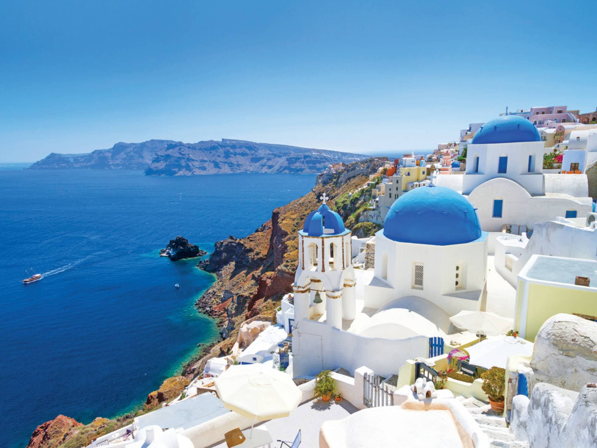

Machu Picchu

Grand Canyon

Iceland

Iguazu Falls
Santorini
|
Machu Picchu |
Grand Canyon |
Iceland |
Iguazu Falls |

Santorini |
|
Nestled like a sparkling crown amid the azure Aegean Sea, Santorini is a vision of breathtaking
beauty. Its iconic whitewashed houses cling to dramatic cliffs, cascading down towards a mesmerizing
caldera, a geological marvel formed by a colossal volcanic eruption millennia ago. The cerulean
waters of the caldera cradle volcanic islets, their black sand beaches whispering secrets of fiery
origins.
|